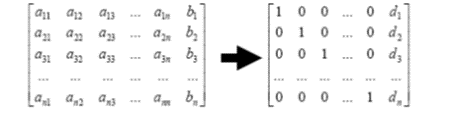
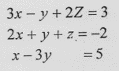
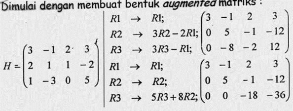
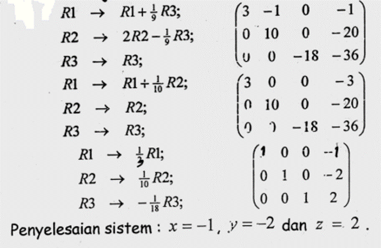

**Metode Eliminasi Gauss Jordan**¶
Metode Gauss-Jordan merupakan suatu variasi dari Eliminasi Gauss dan dalam bahasa analitik biasanya lebih dikenal dengan nama reduksi baris. Perbedaan utamanya dengan eliminasi Gauss adalah bila sebuah yang tidak diketahui dieliminasikan dengan metode Gauss-Jordan maka ia deliminasikan dari setiap persamaan lainnya. Ini merupakan bentuk matrik kesatuan,padahal eliminasi Gauss merupakan matrik triangular.
Dasar Teori¶
- Penambahan Matrik sebelah kiri diubah menjadi matrik diagonal

-
Penyelesaian dari persamaan linier simultan diatas adalah nilai d1,d2,d3,…,dn dan atau x1 = d1,x2 = d2,x3=d3,….,xn=dn
-
Teknik yang digunakan dalam metode eliminasi Gauss-Jordan ini sama seperti metode eliminasi Gauss yaitu menggunakan OBE (Operasi Baris Elementer). Hanya perhitungan penyelesaian secara langsung diperoleh dari nilai pada kolom terakhir dari setiap baris .
-
Satu cara yang gamblang untuk menghitung inversi ialah dengan menggunakan metode Gauss-Jordan. Untuk melakukan ini,matriks koefisien diperluas dengan sebuah matriks kesatuan. Kemudian metode Gauss Jordan diterapkan agar mengurangi matriks koefisien menjadi sebuah matriks kesatuan. Jika ini telah selesai, ruas kanan matriks yang diperluas akan mengandung inversi
Contoh¶
•Selesaikan sistem persamaan :



Program¶
import numpy as np
#Definisi Matrix
A = []
B = []
n = int(input("Masukkan ukuran Matrix: "))
for i in range(n):
baris=[]
for i in range(n):
a=int(input("Masukkan Nilai: "))
baris.append(a)
A.append(baris)
for i in range(n):
h = int(input("Masukkan Hasil: "))
B.append(h)
Matrix=np.array(A,float)
Hasil=np.array(B,float)
n=len(Matrix)
#Eliminasi Gauss
for k in range(0,n-1):
for i in range(k+1,n):
if Matrix[i,k]!=0 :
lam=Matrix[i,k]/Matrix[k,k]
Matrix[i,k:n]=Matrix[i,k:n]-(Matrix[k,k:n]*lam)
Hasil[i]=Hasil[i]-(Hasil[k]*lam)
print("Matrix A : ",'\n',Matrix)
#Subtitution
x=np.zeros(n,float)
for m in range(n-1,-1,-1):
x[m]=(Hasil[m]-np.dot(Matrix[m, m+1:n], x[m+1:n]))/Matrix[m,m]
print('Nilai X ',m+1, '=',x[m])
Hasil Run:¶
Hasil 1:
Masukkan ukuran Matrix: 3
Masukkan Nilai: 1
Masukkan Nilai: 1
Masukkan Nilai: 1
Masukkan Nilai: 1
Masukkan Nilai: -1
Masukkan Nilai: 2
Masukkan Nilai: 2
Masukkan Nilai: 1
Masukkan Nilai: -1
Masukkan Hasil: 6
Masukkan Hasil: 2
Masukkan Hasil: 3
Matrix A :
[[ 1. 1. 1. ]
[ 0. -2. 1. ]
[ 0. 0. -3.5]]
Nilai X 3 = 2.0
Nilai X 2 = 3.0
Nilai X 1 = 1.0
Metode Jacobi¶
Metode [Iterasi] Jacobi merupakan salah satu bidang analisis numerik yang digunakan untuk menyelesaikan permasalahan persamaan linear dan sering dijumpai dalam berbagai disiplin ilmu. Metode Iterasi Jacobi merupakan salah satu metode tak langsung, yaitu bermula dari suatu hampiran penyelesaian awal dan kemudian berusaha memperbaiki hampiran dalam tak berhingga namun langkah konvergen. Metode Iterasi Jacobi ini digunakan untuk menyelesaikan [persamaan linear] berukuran besar dan proporsi koefisien nolnya besar.
Kalau kita mengubah dalam Sistem Persamaan Linear, maka dapat ditulis sebagai berikut:
Ax=b
Kemudian, diketahui bahwa A =D + (L + U), di mana D merupakan matriks diagonal, L merupakan matriks segitiga bawah, dan U merupakan matriks segitiga atas.
Kemudian, persamaan di atas dapat diubah menjadi:
Dx + (L + U)x=b
Kemudian,
× = D ̄ ¹[b-( L + U )×⁽ᵏ⁾]
Jika ditulis dalam aturan iteratif, maka metode Jacobi dapat ditulis sebagai:
×⁽ᵏ⁺¹⁾ = D ̄¹[b-( L + U )×⁽ᵏ⁾]
di mana k merupakan banyaknya iterasi. Jika ×⁽ᵏ⁾ menyatakan hampiran ke-k penyelesaian SPL, maka ×⁽⁰⁾ adalah hampiran awal.
Algoritme Metode Jacobi¶
INPUT :
n, A, b, dan hampiran awal Y=(y1 y2 y3…yn)T , batas toleransi T, dan maksimum iterasi N
OUTPUT :
ꓫ=(x₁ x₂ x₃……xn)ᵀ, vektor galat hampiran g, dan H yang merupakan matriks dengan baris vektor-vektor hampiran selama iterasi.
- Set penghitung iterasi k=1
- WHILE k < = N DO

- FOR i = 1,2,3,…,n, Hitung
- SET ꓫ=(x₁ x₂ x₃……xn)ᵀ
- IF ||X_Y||<T THEN STOP
- Tambah penghitung iterasi, k = k + 1
- FOR i = 1,2,3,…,n, Set yi=xi
- SET Y=(y1 y2 y3…yn)T
- Tulis pesan “Metode gagal setelah N iterasi”
- STOP
Program¶
from pprint import pprint
from numpy import array, zeros, diag, diagflat, dot
import numpy as np
def jacobi(A,b,N=25,x=None):
#Membuat iniial guess
if x is None:
x = zeros(len(A[0]))
#Membuat vektor dari elemen matrix A
D = diag(A)
R = A - diagflat(D)
#Iterasi
for i in range(N):
x = (b - dot(R,x)) / D
return x
Mat1 = []
Mat2 = []
n = int(input("Masukkan ukuran Matrix: "))
for i in range(n):
baris=[]
for i in range(n):
a=int(input("Masukkan Nilai: "))
baris.append(a)
Mat1.append(baris)
for i in range(n):
h = int(input("Masukkan Hasil: "))
Mat2.append(h)
A = array(Mat1,float)
b = array(Mat2,float)
x=len(Mat1)
guess = np.zeros(x,float)
sol = jacobi(A,b,N=25,x=guess)
print("A:")
pprint(A)
print("b:")
pprint(b)
print("x:")
pprint(sol)
Hasil Run¶
contoh 1:
Masukkan ukuran Matrix: 3
Masukkan Nilai: 2
Masukkan Nilai: 4
Masukkan Nilai: 3
Masukkan Nilai: 5
Masukkan Nilai: 7
Masukkan Nilai: 3
Masukkan Nilai: 5
Masukkan Nilai: 6
Masukkan Nilai: 3
Masukkan Hasil: 20
Masukkan Hasil: 18
Masukkan Hasil: 30
A:
array([[2., 4., 3.],
[5., 7., 3.],
[5., 6., 3.]])
b:
array([20., 18., 30.])
x:
array([2.06506309e+10, 9.61264713e+09, 2.15123264e+10])
Cotoh 2:
Masukkan ukuran Matrix: 2
Masukkan Nilai: 3
Masukkan Nilai: 6
Masukkan Nilai: 3
Masukkan Nilai: 8
Masukkan Hasil: 9
Masukkan Hasil: 16
A:
array([[3., 6.],
[3., 8.]])
b:
array([ 9., 16.])
x:
array([-3.77826554, 3.45248547])
Gauss Seidel¶
Eliminasi Gauss seidel adalah metode yang menggunakan proses iterasi hingga diperoleh nilai nilai yang berubah.
Bilai diketahui peramaan linier simultan:

Konsep Metode Gauss Seidel¶
- Hitung nilai xi untuk (i = 1 s/d n)
 ¶
¶
- proses iterasi dihentikan apabila bila selisih nilai xi (i = 1 s/d n ) dengan nilai xi pada iterasi sebelumnya kurang dari nilai toleransi error yang ditentukan
Algoritma metode Gauss Seidel¶
- Masukkan matrik A, dan vektor B beserta ukuranya n.
- tentukan batas maksimum iterasi max_iter
- tentukkan toleransi error.
- tentukan nilai awal dari xi, untuk i =1 s/d n
- simpan xi dalam si, untuk i=1 s/d n
- untuk i=1 s/d n hitung

- iterasi <- iterasi +1
- bila iterasi lebih dari max_iter atau tidak terdapat ei<ϵ untuk i=1 s/d n maka proses dihentikan dari penyelesaianya adalah xi untuk i=1 s/d n. Bila tidak maka ulangi langkah (5).
contoh¶
 ¶
¶
¶
Program¶
def seidel(a, x ,b):
#Mencari Panjang Matrix
n = len(a)
for j in range(0, n):
d = b[j]
#Menghitung xi, yi, zi
for i in range(0, n):
if(j != i):
d-=a[j][i] * x[i]
x[j] = d / a[j][j] #Solusi
return x
m=int(input("Masukkan Panjang Matrix: "))
a=[]
b=[]
for k in range(m):
mat1=[]
for i in range(m):
l=float(input("Masukkan a"+str(k+1)+","+str(i+1)+": "))
mat1.append(l)
h=float(input("Masukkan Hasil: "))
b.append(h)
a.append(mat1)
n = 3
x = [0, 0, 0]
print(x)
for i in range(0, 100):
x = seidel(a, x, b)
#print each time the updated solution
print(x)
Masukkan Panjang Matrix: 2
Masukkan a1,1: 2
Masukkan a1,2: 4
Masukkan Hasil: 3
Masukkan a2,1: 5
Masukkan a2,2: 3
Masukkan Hasil: 8
[0, 0, 0]
[1.5, 0.16666666666666666, 0]
[1.1666666666666667, 0.722222222222222, 0]
[0.055555555555556024, 2.574074074074073, 0]
[-3.648148148148146, 8.74691358024691, 0]
[-15.993827160493819, 29.3230452674897, 0]
[-57.1460905349794, 97.91015089163233, 0]
[-194.32030178326465, 326.53383630544107, 0]
[-651.5676726108821, 1088.6127876848036, 0]
[-2175.725575369607, 3628.8759589493457, 0]
[-7256.251917898691, 12096.419863164485, 0]
[-24191.33972632897, 40321.566210548284, 0]
[-80641.63242109657, 134405.38736849427, 0]
[-268809.27473698853, 448018.1245616476, 0]
[-896034.7491232952, 1493393.915205492, 0]
[-2986786.330410984, 4977979.884018307, 0]
[-9955958.268036613, 16593266.446727687, 0]
[-33186531.393455375, 55310888.322425626, 0]
[-110621775.14485125, 184369627.90808544, 0]
[-368739254.3161709, 614565426.5269514, 0]
[-1229130851.5539029, 2048551421.9231713, 0]
[-4097102842.3463426, 6828504739.910571, 0]
[-13657009478.321142, 22761682466.535236, 0]
[-45523364931.57047, 75872274888.61745, 0]
[-151744549775.7349, 252907582962.22482, 0]
[-505815165922.94965, 843025276540.916, 0]
[-1686050553080.332, 2810084255136.553, 0]
[-5620168510271.606, 9366947517122.01, 0]
[-18733895034242.52, 31223158390406.863, 0]
[-62446316780812.23, 104077194634689.7, 0]
[-208154389269377.9, 346923982115632.5, 0]
[-693847964231263.5, 1156413273718775.2, 0]
[-2312826547437549.0, 3854710912395917.5, 0]
[-7709421824791834.0, 1.2849036374653058e+16, 0]
[-2.5698072749306116e+16, 4.283012124884353e+16, 0]
[-8.566024249768706e+16, 1.4276707082947842e+17, 0]
[-2.8553414165895683e+17, 4.7589023609826144e+17, 0]
[-9.517804721965229e+17, 1.5863007869942047e+18, 0]
[-3.1726015739884093e+18, 5.287669289980682e+18, 0]
[-1.0575338579961364e+19, 1.7625564299935607e+19, 0]
[-3.5251128599871214e+19, 5.875188099978536e+19, 0]
[-1.1750376199957071e+20, 1.9583960333261786e+20, 0]
[-3.916792066652357e+20, 6.527986777753928e+20, 0]
[-1.3055973555507857e+21, 2.1759955925846427e+21, 0]
[-4.3519911851692854e+21, 7.253318641948809e+21, 0]
[-1.4506637283897618e+22, 2.417772880649603e+22, 0]
[-4.835545761299206e+22, 8.059242935498677e+22, 0]
[-1.6118485870997353e+23, 2.6864143118328925e+23, 0]
[-5.372828623665785e+23, 8.954714372776308e+23, 0]
[-1.7909428745552617e+24, 2.984904790925436e+24, 0]
[-5.969809581850872e+24, 9.94968263641812e+24, 0]
[-1.989936527283624e+25, 3.3165608788060404e+25, 0]
[-6.633121757612081e+25, 1.1055202929353469e+26, 0]
[-2.2110405858706938e+26, 3.685067643117823e+26, 0]
[-7.370135286235646e+26, 1.2283558810392744e+27, 0]
[-2.4567117620785488e+27, 4.094519603464248e+27, 0]
[-8.189039206928496e+27, 1.364839867821416e+28, 0]
[-2.729679735642832e+28, 4.549466226071387e+28, 0]
[-9.098932452142774e+28, 1.5164887420237957e+29, 0]
[-3.0329774840475915e+29, 5.054962473412652e+29, 0]
[-1.0109924946825304e+30, 1.6849874911375506e+30, 0]
[-3.3699749822751013e+30, 5.616624970458502e+30, 0]
[-1.1233249940917004e+31, 1.8722083234861674e+31, 0]
[-3.7444166469723348e+31, 6.240694411620558e+31, 0]
[-1.2481388823241117e+32, 2.0802314705401862e+32, 0]
[-4.1604629410803725e+32, 6.934104901800621e+32, 0]
[-1.3868209803601242e+33, 2.311368300600207e+33, 0]
[-4.622736601200414e+33, 7.704561002000691e+33, 0]
[-1.5409122004001381e+34, 2.568187000666897e+34, 0]
[-5.136374001333794e+34, 8.560623335556324e+34, 0]
[-1.712124667111265e+35, 2.853541111852108e+35, 0]
[-5.707082223704216e+35, 9.511803706173693e+35, 0]
[-1.9023607412347386e+36, 3.170601235391231e+36, 0]
[-6.341202470782462e+36, 1.0568670784637437e+37, 0]
[-2.1137341569274874e+37, 3.5228902615458124e+37, 0]
[-7.045780523091625e+37, 1.1742967538486043e+38, 0]
[-2.3485935076972086e+38, 3.914322512828681e+38, 0]
[-7.828645025657362e+38, 1.3047741709428937e+39, 0]
[-2.6095483418857873e+39, 4.349247236476312e+39, 0]
[-8.698494472952624e+39, 1.4497490788254373e+40, 0]
[-2.8994981576508745e+40, 4.832496929418125e+40, 0]
[-9.66499385883625e+40, 1.6108323098060416e+41, 0]
[-3.221664619612083e+41, 5.369441032686805e+41, 0]
[-1.073888206537361e+42, 1.789813677562268e+42, 0]
[-3.579627355124536e+42, 5.966045591874227e+42, 0]
[-1.1932091183748453e+43, 1.9886818639580756e+43, 0]
[-3.977363727916151e+43, 6.628939546526918e+43, 0]
[-1.3257879093053837e+44, 2.209646515508973e+44, 0]
[-4.419293031017946e+44, 7.365488385029909e+44, 0]
[-1.4730976770059818e+45, 2.4551627950099695e+45, 0]
[-4.910325590019939e+45, 8.183875983366565e+45, 0]
[-1.636775196673313e+46, 2.727958661122189e+46, 0]
[-5.455917322244377e+46, 9.093195537073962e+46, 0]
[-1.8186391074147924e+47, 3.0310651790246545e+47, 0]
[-6.062130358049309e+47, 1.0103550596748849e+48, 0]
[-2.0207101193497698e+48, 3.3678501989162833e+48, 0]
[-6.735700397832567e+48, 1.1226167329720944e+49, 0]
[-2.245233465944189e+49, 3.742055776573648e+49, 0]
[-7.484111553147296e+49, 1.2473519255245493e+50, 0]
2.4947038510490986e+50, 4.1578397517484975e+50, 0]
[-8.315679503496995e+50, 1.385946583916166e+51, 0]
>>>
<script type="text/javascript" async src="https://cdn.mathjax.org/mathjax/latest/Mathjax.js?config=TeX-MML-AM_CHTML">
</script>